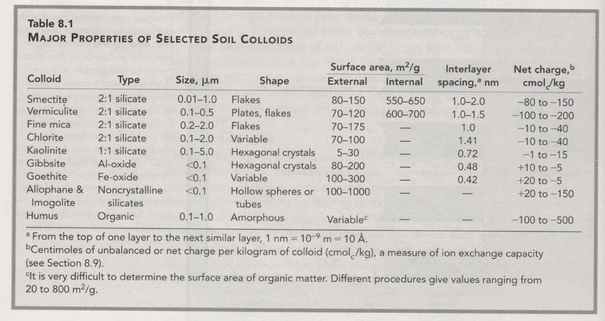

4.1 Background
4.1.1 Soil formation
4.1.1.1 Jenny, 1994
“Factors of soil formation: A quantitative system of pedology” (Jenny 1994)
Key contribution: This is Hans Jenny’s seminal work on the factors of soil formation. The most significant contribution of the work is his conceptual model for soil formation, which is shown below:
\[soils = f(climate, organisms, relief, parent material, time)\] The model allows for conceptual investigation of the various factors that influence the formation of a soil “system.” Jenny defined soils as “systems” that were largely influenced by initial states (relief, parent material, time) as well as their surroundings (climate, organisms).
4.1.1.3 Amundson, 2014
“Soil formation” (Amundson 2014)
Key contribution: This is an extensive review on the formation of soil that extends Amundson’s earlier work in the first volume of the Treatise on Geochemistry.
Structure: The chapter is structured as follows:
- Overview of what a “soil” is
- Conceptual partitioning of the earth surface
- Stable landforms
- Erosional landscapes
- Human dimensions of soil formation
- Soil chemistry in deserts
- Soil formation on Mars
Notes: This chapter should be reviewed several times, as it is indicative of Ron’s current thinking on soil formation processes.
Conceptual issue of what constitutes a “soil” - different views of soil thickness among differing scientific communities. For example:
- Earth sciences - primarily concerned with the mobile layer of weathering profile in which material no longer reflects parent rock (often restricts to A horizon as B horizon still has parent material)
- Geochemical perspectices - interested in the whole weathering process and thus interest extends to more considerable depths
Import to consider: What is the depth at which I am interested for mangroves?
Soil data access - There are several platforms for which rich data on soils in the US can be collected:
- Web soil survey - portal for soil maps and lab data
- Soil-web - accesses same database as Web Soil Survey, but uses a different architecture to interface with key technologies (Google Earth, Maps, & smartphones)
- Digital soil map of the world – currently under development but needs more effort (see Sanchez, 2009, Science)
Soil formation - Can very abstractly be thought of in three classes:
- Stable landforms, where derivative of slope = 0
- Erosional landforms, where derivative of slope is negative
- Depositional landforms, where derivative of slope is positive
Stable landforms - Depositional processes can be understood largely through examination of elements relative to that of a parent material. Often this is done by normalizing that element relative to an element that is immobile in the soil weathering environment (Zr, Ti, Nb, etc.).
Often use chronosequences to examine changes over time due to inability to perform experiments over extremely long time scales.
Some characteristic steps of soil formation in stable landscapes are outlined:
- Primary inputs to soil come from organisms; fixing of atmospheric CO2 and NO3 and NH4 bound with amino acids
- Biotic mechanisms take place and alter the sedimentary structure of the soil (physical mixing)
- Through chemical weathering, accumulation of secondary clay minerals in the B horizon occurs
- Clay accumulation and soil thickening occur over long timeframes, volume decreases and bulk density increases resulting in relative “collapse” of soil
Whether you consider just the A or B horizon depends on discipline and particular viewpoints.
Within San Joaquin Valley, the “mound and swale” topography is due to the relative increase of clay which creates a higher water table and reduces the A horizon of soil placing pressure on gophers. In response, gophers are hypothesized to undertake directional movement of soil to the tops of mounds.
- Note, this is the state soil of California (San Joaquin soil series)
- “Fine, mixed, active, thermic Abruptic Durixeralfs”
Important point is that rates of mineral dissolution in almost all soils are transport limited in that it is not the resistance of elements or materials that determine rates, but rather flow of liquids.
Thus, the rate of weathering is relatively constant with age and thus may have weathering fronts that exist at very considerable depths.
Weathering front - the boundary between the parent rock and either weathered rock or regolith
Erosional landscapes - One of the most important conceptual changes in soil formation within last fifteen years is through modeling of soil transport on hillslopes, particularly through coupling of physical processes with geochemical ones (see Dietrich et al., 2003).
Denudation - processes causing wearing away of Earth’s surface via moving water, ice, wind or waves; leads to reduction in elevation and relief
The chemical weathering rate can be defined as the difference between the total denudation rate and the physical erosion rate.
\[ Chemical\ weathering = Total\ denudation - Physical\ erosion\]
The position of the weathering front will depend upon the relative balance between the denudatoin rate and the propagation rate of the weathering front. If denudation (soil loss) exceeds that of weathering front propagation rate, then the front cant be expected to be shallow, and vice versa.
Denudation is apparently insensitive to rainfall for vegetated landscapes, where as weathering front propagation rate is highly sensitive to levels of rainfall.
Human influences - The scale at which humans are influencing soils is massive. When defining “endangered soils” as those soil series that have lost at least 50% of their extent, considerable portions of soils in the US have been affected (particularly in the mid-West), but also much of the central valley and along the E. coast.
The effects of mechanical alteration of soils as well as through the addition of high amounts of water in arid or semi-arid landscapes greatly accelerates chemical weathering processes (e.g., removal of salts, altering of pH, secondary clay formation, etc. Additional research is needed on the effects of agriculture on undisturbed soils.
Soil geochemistry in deserts - Use of isotope research in arid soils reveals that stable isotopes in soils are rarely conservative tracers of element source (is this for all soils? what does he mean by this?), but rather reflect complex postdepositional processes caused by aqueous or gaseous transport.
An important interpretation of this is that C isotope ratios of soil CO2 (and thus any carbonate that forms from it) largely reflects the isotope ratio of plant respiration and the concentration of atmospheric CO2. Additionally, C isotope ratios are highly variable along the depth profile.
Soil formation on Mars - Investigation of soils in the top 10-15 cm of the surface of mars allows for interesting insight into soil formation and development processes in the absence of water; however, the conclusions of existing work conclude that much of the observation were driven by prior existence of liquids on the surface.
4.1.2 Soil classification
Classifying soils includes chemical, physical, and biological properties that may be directly observable in the field or quantifiable via lab analyses. The soil taxonomic name that is associated with a particular soil series is built to reflect each of these characteristics.
Key terms:
Pedon - Smallest three-dimensional sampling unit that displays the full range of characteristic properties of a particular soil
Polypedon - A group of closely associated pedons that are commonly found adjacent to another within the field (i.e., slight variations in a one general pedon). A polypedon forms a soil individual.
Soil series - A class of soil individuals that exhibit the same properties and horizons, though they may be disjunct in space or time
Diagnostic soil horizons are often associated with precise quantitative measures and are used to resolutely identify a soil as particular series or not
Diagnostic soil horizons may occur at the surface or below the surface of the soil. Horizons that occur at the surface of the soil are termed epipedons. Seven epipedons exist:
- Mollic - Dark color rich in organic matter
- Umbric - Same general characteristics as mollic, but base saturation is much lower
- Ochric - Mineral horizon that is too thin and light in color to Mollic or Umbric; may be very hard when dry
- Melanic - Black, organic matter rich horizon characteristic of soils derived from volcanic ash
- Histic - 20 - 60 cm thick layer of organic soil materials overlaying mineral soil; characteristic of wet areas such as peats
- Anthropic - Same limits as Mollic epipedon, but has formed through extensive human use (e.g., agricultural soil)
- Plaggen - Human-made surface layer approximately 50 cm thick made from extensive manuring
The diagnostic subsurface soil horizons consist of:
- Argillic - subsurface accumulation of high-activity silicate clays that have either precipitated downwards or formed in place
- Natric - silicate clay accumulation but with high exchangeable sodium on the clay complex; common in arid or semi-arid regions
- Kandic - accumulation of Fe and Al oxides as well as low-activity clays (kaolinite)
- Oxic - highly weathered subsurface horizon very high in Fe and Al, oxides and kaolinite; found in tropics and subtropics
- Spodic - illuvial horizon (material displaced by rainwater from one horizon to another) characterized by accumulation of colloidal organic matter and Al oxides; common in highly-leached, sandy cool humid climates (think pine forests)
- Sombric - illuvial horizon dark in color due to high OM accumulation; found mostly in cool, moist plateaus and mountains of tropics and subtropics
- Albic - light-colored eluvial (formed in place) low in clay and Fe and Al oxides which have been transported downwards
- Calcic - accumulation of carbonates (white chalk-like nodules)
- Gypsic - accumulation of gypsum
- Salic - accumulation of soluble salts
Soil moisture regimes:
- Aquic - soil saturated with water
- Udic - moisture sufficiently high to meet plant needs
- Ustic - intermediate moisture between udic and aridic; significant periods of drought may occur
- Aridic - soil is dry for at least half of the growing season and moist for less than 90 days (torric indicates the same soils that may be hot in summer but not hot in winter)
- Xeric - moisture regime common to Mediterranean climates; cool, moist winters and warm, dry summers
The soil temperature regimes primarily refer to:
- Frigid (cold)
- Mesic (moderate)
- Thermic (hot)
Soil taxonomy:
- Order - Defined as one of 12 orders
- Suborder - Often integrate the moisture regime of the region (e.g., Aquent)
- Great group - Often indicate presence of a diagnostic horizon (e.g., Sulphaquent)
- Subgroup - Further define diagnostic horizon to add nuance to the classification (e.g., Halic Sulphaquent)
- Family - identifies subsets of subgroups that are similar in texture, mineral composition and mean soil temperature at depth of 50 cm
- e.g., “Typic Argiaquolls, fine, mixed, mesic, active”
- Typic Argiaquoll that is fine in texture, mixed clay mineral content, mesic in temperature (8 - 15 deg C), and with clays active in cation exchange
- Series - named after geographic feature where they were first identified
There are 12 soil orders globally:
- Alfisols - argillic, natric or kandic horizon; high to medium base saturation (alf)
- Andisols - soil formed from volcanic ash (and)
- Aridisols - dry soils with ochric epipedon (id)
- Entisols - little profile development, ochric epipedon is common (ent)
- Gelisols - permafrost; frozen soils (el)
- Histosols - peatland or waterlogged soils with > 20% OM (ist)
- Inceptisols - embryonic soil with few diagnostic features; ochric or umbric epipedon (ept)
- Mollisols - grassland soil rich in organic matter with mollic epipedon (oll)
- Oxisols - oxic horizon, highly weathered (ox)
- Spodosols - spodic horizon common with Fe and Al oxides (od)
- Ultisols - argillic or kandic horizon, low base saturation, very weathered (ult)
- Vertisols - high in swelling clays, cracks when dry (ert)
Mangrove soils are likely to be Aquents (frequent saturation with water) or Fluvents (parent material of recent alluvium, more commonly associated with floodplains)
- likely to be “halic sulphaquents,” “sulfic halaquents”, or “halic sulphaquepts”
Suborders commonly integrate the moisture regime of the region into the soil order (e.g., Aquent).
More than 400 Great Groups exist, defined primarily by presence of diagnostic horizons, which supply formative elements for the names (suphic diagnostic horizon in Sulphaquents, halic diagnostic horizon in Halaquents)
Subgroups - central concepts of a Great Group makes up one subgroup (Typic). Others introduce secondary diagnostic characteristics that better situate the soil between different Great Groups. (e.g., Sulfic Halaquents as an Aquent with Halic diagnostic properties but also Sulfuric properties).
Families - Approximately 8,000 families have been identified; integrate information on the physical and chemical properties affecting the growth of plant roots.
- Information on particle size, mineralogy, CEC activity, temperature, and depth of soil
4.1.3 Soil architecture
Soil color: Soil color is classified using the Munsell charts and is a function of:
- Hue - Redness or yellowness
- Chroma - Lightness or darkness
- Saturation - Intensity of brightness of the color
Soil color is indicative of many properties of the soil, including presence of organic matter, moisture content, or presence of Fe or Mn oxides.
Gleying refers to reduction of Fe or Fe depletion from the soil and is indicated by a gray soil color.
Soil texture: Soil texture ranges greatly (e.g., from clay to boulders), but often we refer to the fine-earth fraction (sand, silt & clay) in referring to soil texture.
- Sand - Smaller than 2 mm in size but greater than 0.05 mm; most common material constituent is quartz (SiO2), or other silicate materials
- Silt - Between 0.05 mm and 0.002 mm; Similar in shape and mineral composition to sand but much smaller in size and thus drains water more slowly
- Clay - Less than 0.002 mm; Extremely large surface areas which results in great propensity to hold water
- The finest sizes of clays act as colloids (i.e., where particles suspended in a liquid do not readily settle out)
- More commonly flat and plate-like than round which further inhibits passing of liquids and gasses
Textural classes - Soils exist on a continuum of texture, but can classified generally given their relative percent composition of sand, silt or clay
Central concept of a loam is defined as a mixture of sand, silt and clay that exhibits properties of those separates in approximately equal proportions.
Adding peat or compost to soils does not technically change the texture, as the texture criteria is only referring to the mineral particles.
Soil structure: Soil particles aggregate together to form peds or aggregates, which greatly influence the structure and functioning of the soil.
Peds may vary in size from 1 mm to 1 m; Commonly used to refer to the whole structure of the soil (as aggregates exist at different scales), but is synonymous with “aggregate”. Peds often vary depending on the horizon in which they are found. The principal ped shapes are:
- Spheroidal
- Platy
- Prismlike
- Blocklike
Soil aggregates consist of macroaggregates that are a combination of microaggregates. Both biological and physical-chemical processes are important in their formation, though PC processes matter primarily for microaggregates whereas biological processes are more critical for macroaggregates.
Flocculation is the mutual attraction between clay and organic molecules, and is key for formation of microaggregates (particularly for sedimentation in mangroves).
- Form through a covalent bond in which positive charged ions compressed against one another attract negative charges on the opposites platelet.
Organisms (e.g., earthworms) and plant roots are also important in forming of casts through consumption of soil as well as production of sticky substances (glomulin) that are important in forming aggregates.
Soil density: There is a key distinction between particle density and bulk density that should be noted. In particular:
- Particle density is defined as the mass of the soil particles per unit volume of soil solids (i.e., no pore space is considered)
- Particle densities vary little and are typically between 2.6 - 2.75 Mg/m3
- Bulk density is the mass of the soil particles per unit volume of soil (including the pore spaces)
- Bulk density values vary to a much larger degree
One of the key reasons for measuring bulk density is for the calculation of total porosity (i.e., through comparison of particle density and bulk density). Provides a measure of total pores, but pores are comprised of both macropores (> 0.08 mm) as well as micropores (< 0.08 mm).
- Macropores readily allow movement of gas and water within the soil, as well as growth of plant roots and movements of soil organisms.
- “Micropores” are typically filled with water. Even when not filled with water, they are small enough to restrict passage of gasses. Water in these pores is restricted to plants
4.1.4 Soil hydrology
Key notes:
Properties of water molecules - Ability of water to influence soil processes is largely due to the structure of water. In particular:
- Polarity - The H atoms of water line up in a V-shape of 105 degrees which induces a polarity to the molecule.
- Hydrogen bonding - Hydrogen atom of one water molecule is attracted to the H of another water molecule forming a low-energy bond that results in polymerization of water. Hydrogen bonding thus accounts for the following behaviors of water
- Cohesion - Adherence of water molecules to one another
- Adhesion - Adherence of water molecules to the surfaces of solid particles
- Tension - Results from greater attraction of water molecules to one another than to gases, which results in tight bonding of water molecules at the air/water interface
Capillary action is important for the movement of water within soils. Capillary action occurs through the dual action of adhesion and cohesion.
Soil water energy concepts - Various forces come into play in determining movements of water in the soil.
Water transfers from states of high energy to low energy, and various forces that determine the potential energy of water are important:
- Matric forces – forces caused by adhesion that are responsible for adsorption and capillarity.
- Osmostic forces – forces driven by differences in ion concentrations in solutes
- Gravity – self explanatory; constant downwards force on water
Water potential is determined as the difference in potential energy between water within a given soil at a particular location with water at a reference location at standard pressure and temperature with no effects of soil.
Total soil water potential is a function of:
- Gravitational potential
- Matric potential – extremely important for supply of water to plant roots
- Hydrostatic potential – pressures from the weight of water in saturated soils
- Osmotic potential
- Important for mangroves
- Other more minor potentials…
Matric and hydrostatic potentials are part of the “pressure potential,” whereas gravitational and osmotic are considered alone.
Soil water content and water potential - An inverse relationship exsists between the water content of soils and how strongly water is held within soils.
In describing water content of soil, need to describe both i) the water content as well as ii) the water potential. Behavior of water in soil is typically determined primarily by water potential rather than water content.
“Water content” is defined as a volume of water per volume soil. Typically measured as difference between wet and dry weights of soil.
“Water potential” can be measured in different ways; Matric potential can be measured via a tensiometer, which is a semi-porous rod filled with water that allows water to flow out of the rod and creates a vacuum within the rod. Tensiometers are useful over a range of 0 to -85 kPa.
Flow of water - Flow can be broken into three primary types:
- Saturated flows - Saturated flow occurs when soil pores are completely filled. Hydrostatic potentials play a part here and the hydraulic conductivity is largely determined by macropore spaces
- Flow rates are proportional to the fourth power of the radius, and thus macropore space greatly determine flows during saturated flow.
- Preferential flow is the faster flow of water through biopores (e.g., pores and channels created by organisms) or large cracks
- Unsaturated flows - Large pores are free of water but smaller pores hold water
- Primary driver of water flow is “matric potential gradient”
- Soil texture is highly important as clays will moderate flows whereas sandy loams are more “flashy”
- Vapor movements - Result of vapor pressure differences in relatively dry soils
Infiltration and percolation - Texture of soil and in particular presence of macropores are critical here.
Qualitative descriptions of soil wetness - Several classes of soil wetness can be described:
- Maximum retentive capacity - all pore spaces are filled, matric potential is close to zero and gravitational forces dominate
- Field capacity - soil will drain via gravitational forces within 1 - 3 days, and matric forces will dominate (generally a range of -10 to -30 kPa). Field capacity is an important condition given:
- Maximum level of water available to plants is present
- Soil is at optimal “pliability” in that below field capacity it will begin to crumble and above that it will easily turn to mud
- Sufficient pore space is available to allow aeration for microbial activity and plant growth
- Plant available water - from 10 - 30 kPa to 1500 kPa - water potentials at which water is largely available to plants
- Permanent wilting percentage - point at which plants wilt during both day and night due to inability to extract water from soil (<1500 kPa)
- Hygroscopic coefficient - point at which water is only available in vapor form due to extreme aridity
The amount of organic matter within a soil can influence the amount of plant available water greatly. Organic matter has a high water-holding capacity, particularly relative to mineral soils.
“Least limiting water range” - Saturation of soil may produce anoxic conditions which restrict root growth. Often times this is the point at which only 10% of pore space is filled with air. Additionally, soils may become too dry for plant roots to push through them during growth (2000 kPa)
Relevance for mangroves - My own interpretation of how this might matter for mangroves is as follows:
For mangroves, matric potentials and osmotic potentials likely drive water flows within mangroves. Given the extremely find sediment of many mangrove forests, there is likely very little pore space for which water and air may enter the soil. Water flushing and aeration may only exist within top 15-20 cm of soil.
4.1.5 Soil aeration
Aeration is the process of soil ventilation, with gases moving both into and out of the soil. Requires both the supply of oxygen as well as the removal of CO2 from the soil.
Three primary processes control the availability of oxygen within soils:
- Soil macroporosity
- Soil water content
- O2 consumption
Plants that have adapted to waterlogged soils (i.e., in wetlands) are hydrophytes, and have aerenchyma which are hollow tissues used for the transport of oxygen to the roots.
Aeration of soil occurs through two primary mechanisms:
- Mass flow – much less significant on total exchange of gases
- Diffusion – most significant process; gases moving in response to their partial pressures
- partial pressures is the pressure a particular gas in a gas mixture will exert
- O2 will generally move into soil whereas water vapor and CO2 will typically move from soil to the atmosphere
There are three primary ways of characterizing aeration of soil:
- Directly describing the gas constituents in the soil
- Air-filled soil porosity (i.e., percentage of soil pores that are filled with air)
- Redox potential as a measure of the oxidation and reduction of different elements (i.e., a measure of aerobic metabolism by organisms)
Reduction-oxidation (redox) describes the chemical processes by which electrons are transferred. Reduction and oxidation occur together, as electron is transferred from one (the reductant) to the other (the oxidant). Micro-organisms drive majority of redox reactions, often consuming electrons from C or accepting electrons from oxygen. Respiration is largely the consumption of C based electrons from carbohydrates.
Basic example of respiration in which electrons are derived from an organic molecule:
\[CH_{2}O + H_{2}O = CO_{2} + 4e^-\]
The electrons cannot exist in independent form, and thus are run through metabolic cycles in organisms and dumped onto electron acceptors (e.g., O2).
Oxygen is important within soils as it rapidly accepts electrons from other elements, which allows for metabolic processes. Aerobic respiration is performed on O2 (oxidize organic carbon) and release energy for metabolic activity.
The redox potential of a soil is a measure of how well much oxidation-reduction it is able to perform (i.e., a measure of its ability to accept or donate electrons), and depends upon presence of electron acceptors as well as pH. Redox potential typically decreases as the pH increases.
Oxidizing soils - accept electrons easily Reducing soils - donate electrons easily
Standard Eh levels for drained, well-aerated soils is in the 0.4 - 0.7 Volt range, whereas flooded conditions can reduce Eh levels to as low as -0.3 V.
Other electron acceptors besides oxygen are:
- Nitrate - accepts 2 electrons when reduced from N(V) to N(III); reduces to N2
- Manganese (VI) -> reduces to Mn(II)
- Iron (III) -> reduces to Fe(II)
- Sulfur (from SO42- to S2- (reduced))
- Carbon (reduction of CO2 produces CH4)
Electron acceptors are typically used up in this order (i.e., sulfur reduction is a process that occurs largely under very anaerobic soils). Anerobic systems result in the build up of reduced species
The form of particular elements is important because it will change availability for uptake by plants (i.e., oxidized vs. reduced states).
Factors that affect soil aeration:
- Presence of macropores – most important factor in well-drained soils; function of soil texture, bulk density, aggregate stability, OM content, and biopore formation
- Microbial activity – rates of respiration in the soil will greatly influence gas composition, and is dependent upon availability of organic matter
- Soil heterogeneity – lower oxygen concentrations in subsoils; often due to slow diffusion, reduced pore space (from compaction), and greater proportion of pore space filled by water
- plant roots may reduce or increase O2 content (diffusion of O2 from root aerenchyma)
- Seasonal differences
- Changes in precipitation patterns or temperature
Ecological effects of soil aeration:
- Nature and rates of microbial activity are determined largely by O2 concentrations
- Redox of elements:
- Determines form and thus availability of elements, which may be beneficial or toxic
- Methane production, which occurs at Redox potentials of approximately -0.2
- Activities of higher plants:
- Root growth may be curtailed
- Absorption of water and nutrients may be decreased
- Formation of certain inorganic compounds may occur
Soil temperature
Growth rates of plants are more strongly controlled by soil temperature than the air temperature. Biological zero is 5 deg Celcius, in which microbial activity virtually ceases.
Impacts of frost-heave and fire on soils can be significant. Effects of fire typically limited to the top 1-2 centimeters, but can be intense enough to alter organic matter, soil conditions, and kill soil organisms.
Temperature of soil in the field is largely dependent upon three factors:
- Net amount of heat energy the soil absorbs
- Heat energy required to bring change in the soil temperature
- The energy required for processes such as evaporation, which occur primarily near soil surface
Only approximately 10% of solar incidence is actually transferred to soil. Majority is intercepted within atmosphere, by vegetation, or is loss in the evaporation of soil water.
Dark soils do not necessarily warm faster than light soils due to the fact that dark soils may often be very moist and thus solar incidence is lost through evaporation of soil moisture.
Thermal properties of soils
The specific heat (energy required to raise the temperature of a given mass of something by 1 degree C) is much higher for water than for mineral soil solids. Thus, evaporation of water requires a very large amount of energy (2.257 MJ per kg of water).
Thermal conductivity refers to the rate at which heat is tranferred through soil, and is dependent primarily on:
- Soil moisture content - heat passes through water much faster than through air
- Degree of soil compaction - heat passes through mineral particles even faster than through water, thus when compaction and particle-to-particle contact is high, heat is transferred quickly
Wet compact soils are the poorest insulators (i.e., best conductors of heat)
Given seasonal and daily variation in temperatures and the low thermal conductance of soils, there is a temporal lag between the soil temperature and atmospheric temperatures
4.1.6 Soil chemistry
The soil colloids are arguably the most important component of soil chemistry, as they control the majority of exchange of cations and anions within the soil.
The colloidal fraction of soil refers to the clays and humus particles in soil because of their extremely small size (< 1 micrometer) and colloid-like behavior.
The very large surface area to volume ratio of soil colloids is due to the platelike structure, and the present of internal surfaces within clays. The majority of soil colloids primarily carry more negative electrostatic charges than positive charges.
Absorption of cations and anions:
Colloids attract thousands of Al3+, Ca2+, Mg2+, K+, H+, and Na+, which are loosely bound to the surface of the colloid, often in a hydrated state in moist soils.
“Cation exchange” is the process in which one cation breaks free from the colloid, is released into solution, and a different cation takes its place. The ions that are readily lost from the colloid surface are referred to as “exchangeable ions”.
The ionic composition of soil solution (i.e., the water) resembles that of the adsorbed ions (those bound to the colloid) due to the constant exchange between the two.
Exchangeable anions are also present in the soil solution, and will exchange with soil colloids with positive charges on their surfaces.
Types of soil colloids:
- Crystalline silicate clays – dominant in most soils; layered structure like pages in a book; predominantly negatively charged; different silicate clay minerals vary widely in particle shape, however, which influences intensity of charge, plasticity, swelling behavior, etc.
- Examples: smectite, vermiculite, fine mica, chlorite, kaolinite (1:1 silicate)
- Noncrystalline silicate clays – tithgly bonded silicon, aluminum and oxygen atoms, but do not exhibit crystalline sheets; high amounts of positive and negative charge, and capable of holding large amounts of water, but exhibit little stickiness
- Principle types: allophane and imogolite (both form from volcanic ash)
- Iron and aluminum oxides – found widely but are most important in weathered soils of sub-/tropics; slightly negative to moderately positive and are relatively low in plasticity and stickiness
- Examples: gibbsite (Al-oxide) and goethite (Fe-oxide) which form crystalline sheets; others are noncrystalline
- Organic (humus) – convoluted chains and rings of carbon atoms bonded to H, O, and N; very high capacities to hold water, but little to no plasticity and stickiness
A summary of the major colloids and their properties is shown below:
knitr::include_graphics(rep("images/colloids.bmp"))
Layer silicate clay structure:
Silicon tetrahedral and Aluminum-Magnesium octahedral sheets:
- Silicon tetrahedral sheets are comprised of a silicon ion surrounded by four oxygen atoms
- Al-Mg octahedral sheets are comprised of an Al or Mg ion surrounded by 8 oxygen-hydroxy planes
Two to four of the tetrahedral and octahedral sheets will bind together by sharing some of the same oxygen atoms, which results in extremely tight bonds and forms a “layer”. The layers then are bound together via adsorbed ions and water, which forms the clay “crystal”.
The nature and combination of sheets in the layers vary, and thus produce the differences in types of clays (ant thus their resultant physical and chemical properties).
“Isomorphous substitution” is the process by which cations of comparable size to Si, Al, or Mg are substituted for the center of one of the tetrahedrons or octahedrons without significantly changing the structure of the crystal. This is the key process that induces variability in nature of silicate clays.
Isomorphous substitution is the primary cause of charge imbalances in colloids (e.g., through the substituion of a Mg2+ for a Al3+ ion).
Key difference is between 1:1 and 2:1 silicate clays:
- 1:1 silicate clays contain one tetrahedral and one octahedral sheet each in their layers
- 2:1 silicate clays contain one octahedral sheet in between two tetrahedral sheets within each layer
Kaolinite is the classic example of 1:1 silicate clays. Bonding between layers (1 tetra and 1 octa) is via hydrogen bonding, which prevents expansion when the clay is wet. Cations and H2O typically do not enter the structural layers of a 1:1 mineral particle and thus effective surface of kaolinite is primarily the external surface area.
Expanding 2:1 type silicate clays are formed via one octahedral sheet in between two tetrahedral sheets (e.g., smectite and vermiculite). Fine micas and chlorite, on the other hand, are relatively nonexpanding.
Smectite - predominantly have negative charges resulting from isomorphous substitution. Layers are bound via an oxygen-oxygen surface and thus the bond is weak allowing for cations and water to enter the spaces in between.
Vermiculite – tetrahedral sheets have large amounts of Al substitution for the silicon position, which produces a CEC higher than other silicate clays
Fine-grained micas (e.g., illite and glauconite) – very weathered micas with substitution of Al3+ for Si4+ in the tetrahedral sheets. The negative charge attracts K+ ions which strengthens bond between the layers and making the fine-grained micas nonexpansive.
Chlorites – Fe or Mg primarily occupies the place of Al in the octahedral sheets. Mg dominated octahedral sheets commonly sandwiched between two 2:1 layers, thus often said to have a 2:1:1 structure.
Non-silicate colloids
Fe and Al oxides are motified octahedral sheets with Fe or Al in the cation positions, and no tetrahedral sheets or silicon in their structures.
Humus is noncrystalline and is formed of large organic molecules of varied chemical composition. Negative or positive charges on humus colloid are a result of loss or gain of H+ ions; a very large net negative charge is associated with humus, though sites of both positive and negative charges may exist
Formation of colloids
Humus is primarily formed through the breakdown or organic matter (mostly plant matter) by microorganisms and the resynthesis of this material into stable organic compounds.
Silicate clays develop through:
- Physical and chemical alteration of primary minerals
- Decomposition of primary minerals with recrystallization of products into silicate clays
Kaolinites and Fe and Al oxides are found primarily in warm, humid regions (e.g., tropics), whereas smectite, vermiculite and fine-grained micas are primarily in regions where weathering is less intense.
Sources of charges on soil colloids
Two major sources of charge imbalances:
- Hydroxyls and other functional groups on surfaces of colloids releasing or accepting H+ ions
- Charge imbalances as a result of isomorphous substitutions
Charges of all colloids are affected to a certain degree by OH- groups, which are largely pH dependent. The charges of Al and Fe oxides, 1:1 type clays, allophane and humus are primarily determined by OH- groups.
For 2:1 clays, surface charges are complemented by isomorphouos substitutions of cations. Charges from isomorphous substitution are not dependent upon pH, and thus are considered “permanent”
Cation exchange reactions:
Ions held to external surface of clays via electrostatic attraction, which is relatively weak and thus ions are in constant motion. There are points at which ions are closer versus slightly further away from the colloid. If an ion in soil solution enters space closer to the colloid, the ions “exchange”.
Cation exchange reactions are reversible in that the cations can easily revert back to their original places.
Cation exchange reactions occur on charge to charge basis (i.e., 2 H+ for 1 Ca2+).
Ratios of cations within soil solution will match those of cations bound to colloids at equilibrium.
“Mass action” in soil influences the direction at which reactions may occur. If cations released from a colloid precipitate, volatilize, or strongly associate with other element in the solution (e.g., the C and O atoms of a CaCO3 molecule), then they will not exchange back to the colloid.
Different cations are held at different strengths to the colloid. Al3+ is held most strongly, whereas Li+ is held the weakest.
The likelihood of a given cation being replaced is dependent upon the neighboring cations and the strength of bond (i.e., a Mg2+ in between 2 Al3+ ions is more likely to be replaced than Al).
Cation Exchance Capacity (CEC) - Number of centimoles of positive charge that can be adsorbed per unit mass; measure is on a charge for charge rather than ion for ion basis.
Measurement of CEC via pH buffered solutions will yield measures of the potential or maximum CEC, whereas measures taken at the pH of the soil will only measure the effective CEC, which corresponds to the exchangeable cations.
Exchangeable cations in field soils - Varies depending on the environmental conditions of the site.
In humid regions, Ca2+, Al3+, aluminum hydroxy ions and H+ are most prominent, whereas Ca2+, Mg2+, and Na+ dominated in more arid regions.
“Saturation percentage” refers to the percent of the exchange complex held by a particular ion. Useful in identifying acid percentage saturation (H+ and Al3+) versus nonacid (base) saturation percentage.
Exchangeable cations influences the fertility of the soil, as many of the cations are common micronutrients for plants. Percent saturation of a given cation will describe its ready availability within the soil for plants to a certain degree.
Anion exchange - Anions are held by colloids in two primary ways:
- Held by anion adsorption mechanisms similar to those of cation adsorption
- Reactions with surface oxides or hydroxides, which forms inner-spere complexes
Positive charges associated with kaolinite surfaces attract anions such as SO42- and NO3-. Adsorption exchanges typically decrease with increasing pH for anions.
Inner-sphere complexes form when an anion replaces part of a hydroxyl group that is adsorbed by a cation on a colloid.
Anion exchange is important as it determines the mobility of certain important anions within the soil.
4.1.7 Soil pH
Principle processes that determine soil acidification are:
- Production of H+ ions
- Washing away of cations by percolating water
Both processes are facilitated by volumes of water that percolate through soil, and thus acidity is closely related to amounts of precipitation within the region.
H+ ions are produced through dissociation of carbonic acid, which forms through CO2 dissolving in H2O.
\[ CO_{2}\ +\ H_2O\ \to\ H_2CO_3\ \iff\ HCO_3^{-}\ +\ H^+\]
Production of H^+ from H2CO3 is only significant for pH levels greater than 5.
In addition, several biological processes can affect the acidity of the soil:
- Plant balancing of cations - when excess of certain cations are taken up by roots, H+ often released into soil solution so maintain charge balance
- Accumulation of OM - cations can form soluble complexes with nonacid nutrient cations (e.g., Ca2+ and Mg2+), which may result in leaching; nonacid cations may be replaced with acid cations
- Oxidation of nitrogen (Nitrification) - reaction of ammonium (NH4+) with oxygen releases H+ ions.
- Oxidation of sulfur - oxidation of sulfur yields H2SO4, which is a strong acid
Alkalizing processes - Reduction of H+ or production of OH- in the soil alkalizes the soil. Several pathways of alkalizing processes exist:
- Weathering of nonacid cations from minerals – weathering of parent material may result in bonding of H+ and release of nonacid cations, such as Ca2+
- Accumulation of nonacid cations – nonacid cations from weathering may accumulate in areas of low precipitation (Ca2+, Mh2+m K+, and Na+)
- Production of base-producing anions – basic, hydroxyl generating anions are carbonate (CO32-) and bicarbonate (HCO3-); these react with water to form Oh- and raise pH (important for soil buffering)
- The direction of carbonate reactions depends largely on the presence of CO2 in the soil, with greater amounts of CO2 acidifying the soil
- Excess anion uptake by roots – roots excude bicarbonate when excess of anions are taken up by roots
Role of aluminum
Aluminum may have a strong acidifying effect on soil, largely due to its tendency to hydrolyze (split water into H+ and OH-) ions.
Pools of soil acidity - There are three major pools of acidity within soils:
- Active acidity - amount of H+ ion in the soil solution
- very small relative to other two pools
- determines solubility of substances and provides solution environment for organisms
- Exchangeable acidity - associated with exchangeable Al3+ and H+ ions present in large quantities in acid soils
- can be released by cation exchange with unbuffered salts and thus is sometimes referred as salt-replaceable acidity
- Residual acidity - hydrogen and aluminum ions bound in nonexchangeable forms by organic matter and clays
- will dissociate with increase in pH
- largest pool of acidity (10 - 100 thousand times greater than active acidity)
- the amount of bound hydrogen and aluminum ions is much higher for soils rich in OM and clays
The relative amounts of exchangeable versus bound acid and nonacid cations within the soil is largely dependent upon pH. Exchangeable nonacid cations increases as pH increases.
Percent saturation of acid vs. nonacid cations refers to the relative charge percentage accounted for by acid vs. nonacid cations.
“Potential” CEC is the CEC at high pH values, whereas “effective” CEC is the CEC at the pH of the soil.
Soil buffering - The ability of a soil to resists changes in pH
Mechanisms of buffering are largely explained by the equilibrium between the different pools of soil acidity: active, salt replaceable and residual. Largely as a result of uptake or release of acid ions on the exchangeable complex of colloids.
In general, the higher the CEC, the higher the buffering capacity of the soil.
Human influences on soil acidification - Although humans may influence soil pH in many ways, three primary types exist:
- Nitrogen amendments - H+ is released upon oxidation of ammonium; often need to counter-balance additions of OM with additions of lime
- Acid precipitation - effects of acid rain due to combustion of fossil fuels
- addition of strong acid anions (SO42- and NO3-) will bond with nonacid cations and allow for their leaching from soil; aluminum and hydrogen then become dominant on exchange complex
- Exposure of potential acid sulfate soils - disturbance of soils (and thus introduction of O2) into soils with high concentrations of sulfur can produce large amounts of acidity
- common in wetland soils in which constant supply of sulfur is available
- commonly contain high amounts of pyrite (FeS2), iron monosulfides (FeS), and elemental sulfur (S)
- pH may be neutral but quickly shift to extremely acidic a few days after oxidation
Biological toxicity - Acidic soil conditions can create toxic environments for plants and microbes:
Aluminum is the most significant toxicity for plants, which is taken up in roots and restricts growth and functioning. Aluminum is only toxic at pH levels below 5.3
Manganese may also become toxic under acidic conditions as it is increasingly soluble and taken up in excess quantities. Mg is an essential micronutrient but becomes toxic in excess quantities
Nutrient availability in general is greatly influenced due to varying degrees of availability that depend upon pH. Several key macronutrients may be greatly limited under acidic conditions
Fungi do well across a broad range of pH values, and thus tend to dominate in acidic soils (whereas bacteria play a larger role in more neutral soils)
Liming of soil - Majority of liming materials raise the pH of the soil by adding oxide, hydroxide, or carbonate that reacts with carbon dioxide and water to yield calcium (or Mg) and bicarbonate. The abundance of CO2 in soils is typically enough to drive this reaction.
The calcium will exchange with acid cations on the exchangeable complex, which bind to hydroxides from the bicarbonate and thus reduces the percent acid saturation.
Alternative methods to deal with acid soils - In some cases, application of liming material is not efficient (cost restrictions, acidic soil is below surface horizon, etc.) and alternative options of dealing with ill effects of soil acidity are needed:
- Gypsum - ameliorates aluminum toxicity without increasing soil pH
- Organic matter - application of organic wastes, cover crops, or mulching helps to:
- humified OM may bind with Al ions
- organic acids can form soluble complexes with Al ions that are nontoxic to plants and microbes
- substantial amounts of Ca may be available that can raise pH levels and also precipitate easily down the soil profile
- Selecting adapted plants
Lowering soil pH – Acidifying soil can be done through additions or organic or inorganic acid-forming materials. Materials from trees common to spodosols (e.g., pine needles or pine sawdust) may be effective at raising the soil pH. Additionally, inorganic chemicals may be used.
Saline soils - A large section exists in the chapter on saline soils, but is mostly related to agriculture and thus may not be of particular relevance here.
Measuring salinity in soils:
Electrical conductivity - water is a poor conductor, but salt improves its conductance; can measure conductance as an indirect measure of salinity (units: deciSiemens per meter)
Exchangeable sodium percentage (ESP) - the degree by which the exchangeable complex is saturated with sodium.
Sodium adsorption ratio (SAR) - concentration of sodium relative to calcium and magnesium
Classes of salt-affected soils include saline, saline-sodic and sodic.
- saline soils – have an ESP less than 15 or EC values greater than 4 dS/m
- saline-sodic soils – EC greater than 4 dS/m AND ESP greater than 15 (intermediate conditions between saline and sodic)
- sodic – EC less than 4 dS/m, ESP greater than 15, and SAR greater than 13
- most problematic of saline soils
- extremely poor soil physical conditions and slow permeability of water and air
Physical degradation of sodic soils can be significant, and is largely measured in terms of ready movement of water (saturated hydraulic conductivity). In some sodic soils, Ksat may be reduced almost to 0 and puddles form on the soils surface.
Low permeability related to sodic conditions is due to:
- exchangeable sodium increases tendency of aggregates and floccules to break up when wet
- some expanding-type clays become highly Na+ saturated, which increases swelling capability
- sodic conditions may lead to soil dispersion, which is caused by:
- high sodium - have single charge and large hydrated size, which means they are held loosely and at far distances from soil colloids
- low salt concentration - low presence of ions in solution causes exchangeable ions to be spread out over greater distance and thus weakens bonds (anions are found closer to colloids)
In general, low salt concentrations and weakly attracted ions encourage soil dispersion and puddling, whereas high salt concentrations and strongly associated ions (calcium) promote clay flocculation and soil permeability.
4.1.8 Soil organisms
Soil organisms range from macrofauna to microfauna, and tend to aggregate in zones of favorable conditions rather than be spread out evenly through the soil.
A range of different classifications for soil organisms, but often consider trophic level (primary producer, primary consumer, etc.) or feeding patterns (fungivore, herbivore, autotrophic, etc.).
Primary consumers - A variety of primary consumers exist within the soil environment:
- herbivores - feed directly on living plant tissue, for example rodents or larvae feeding on plant roots
- detritivores - vast majority of soil organisms; feed on dead decaying tissues of plants on soil surface and within soil pores
- “shredders” - those organisms that actually feed on organisms on decaying material (e.g., bacteria) rather than the material itself; important for shredding & processing of detritus
- saprophytic - feeding on dead tissues by fungi and bacteria (microflora); accounts for majority of decomposition of dead plant and animal debris
Secondary consumers - Include microflora as well as carnivores
- carnivores – may include centipedes, mites, insects, nematodes, spiders, snails, etc.
- feed on microflora and thus are important for processing of litter
Tertiary consumers - Ants, bird, or other organisms that consume the soil organisms
Abundance of soil organisms:
In general, the ratios of soil OM to detritus to microbial biomass to faunal biomass is 1000:100:10:1.
Total living biomass is generally well-correlated with the dry-weight or organic matter, oftentimes approximately 1-5% of the dry weight of organic matter.
Majority of activity in soils is by microorganisms (estimated at ~80% of total soil metabolism). Nematodes and protozoa play important roles in preying on bacteria and fungi, whereas earthworms can be significant and play an important role as ecosystem engineers.
Plant roots - Typically occupy approximately 1% of soil volume and may also be responsible for 25% - 33% of the respiration occuring in the soil.
Rhizosphere extends approximately 2 mm out from the root surface. Soil conditions within the rhizosphere can be significantly different from that of the surrounding soil.
Fungi:
Most versatile and persistent of any group of OM decomposers within soils. Extremely efficient nutrient cycling, with up to 50% incorporation into fungal tissue (vs 20% for bacteria). Thus, largely important for soil fertility.
Mycorrhizae - “root fungus” or an association of certain species of fungus with plant roots that greatly expands the plants ability to take up nutrients (up to 10 times); helps provides access to nutrients that are relatively inaccessible (phosphorus)
Ectomycorrhizae - primarily associated with temperate or semiarid-regions trees and plants; fungi penetrate plant roots but do not penetrate cortex cell walls (hence ecto-)
Endomycorrhizae - (arbuscular mycorrhizae are most important group); penetrate cortex cell walls and form “arbuscules,” which transfer mineral nutrients to plant, and sugars from the plant to the fungus
Soil prokaryotes - Bacteria and archaea; cells lack nucleus surrounded by a membrane
Prokaryotes may be round, rod-shaped, or spiral; but in soils the rod-shaped prokaryotes appear to dominate.
Prokaryotes have enormous diversity (handful of soil may hold as many species as fauna in the amazon), and consist of both autotrophs and heterotrophs.
Perform important functions within the soil:
- Break down of toxins (for example archae processing hydrocarbons, i.e., oil products)
- Oxidation and reduction of particular elements (e.g., Iron and Mn)
- Nitrogen fixation
Controls on soil microorganism growth:
- Organic matter - almost any addition of OM will boost microbial activity and growth
- additions of certain nutrients will prompt growth from different microorganism types
- for example, bacteria respond well to starch and sugars whereas fungi and actinomycetes have heavier influence with additions of cellulose or other resistant material
- Oxygen, moisture and temperature - increasing availability of oxygen, moisture and higher temperatures all promote microorganism activity
- Exchangeable cations and pH -
Benefits to plants of soil organisms:
- Nutrient availability - primary benefit is the role in processing organic matter and increasing availability of key nutrients for plants
- Breakdown of toxic compounds - can breakdown and process toxins that would otherwise accumulate within the soil profile
- Inorganic transformations - can determine the availability of key micronutrients for plants
- N, S, P, Fe, Mn…
- May also determine the toxicity of particular elements (Se or Cr)
- Nitrogen fixation - fixing of N2 gas by microbes which makes it available to plants
- Cyanobacteria are important in wetlands and other anaerobic environments for fixing N; commonly occurs in root nodules or other associations with plants
Soil organisms and damage to higher plants:
- Competition for nutrients
- Herbivory - rodents, slugs, or snails. Nematodes and insect larvae are the most damaging/extensive; fungal diseases
Can control diseases or impacts on plants through management:
- Maintaining particular pH levels - raising or lowering the pH may be able to rid the soil of particular diseases or fungal infections
- Soil physical properties - allowing good structure and heating of soils can help to aerate soils or kill pathogens that may induce more significant problems
4.1.9 Soil organic matter
Soil organic matter is critical to soil systems for a variety of reasons, but in particular for their increases in CEC, water holding capacity, and also importance to global carbon cycles.
Inorganic carbon may also form a substantial role of C pool in the ecosystem, and is formed largely through reaction of CO2 to produce carbonic acid as well as carbonates and bicarbonates of Ca, K, Mg, and Na.
Nearly half of organic carbon in soils globally is found in histosols, gelisols, and inceptisols.
Process of decomposition:
Dry weight plant matter is approximately 90-95% comprised of C, H, & O.
Four broad classes of organic compounds in plant tissue:
- Carbohydrates - range in complexity from simple sugars and starches to cellulose
- Lignins and polyphenols - difficult to decompose
- Proteins - contain ~16% N and decompose easily
Decompositional process primarily consists of three steps:
- enzymatic oxidation of organic compounds - releases CO2, energy, water and biomass
- Nutrient specific release and/or immobilization
- Formation of resistant compounds either through microbial activity or modification of the compounds
Mineralization - process that releases elements from organic compounds to produce inorganic forms
Within a soil system, both r-strategist and k-strategist organisms exist in regards to OM decomposition.
- r-strategists - “rate” organisms that decompose easily digestible OM at very fast rates
- k-strategists - “constant” organisms that feed primarily on the more retractible OM found in the soil system
With addition of OM to a system, a sharp spike in populations of r-strategists will occur, and massive amounts of decomposition will occur. As OM levels are reduced, the r-strategists begin to die-off, which provides additional nutrients for surviving r-strateigists as well as k-strategists. Eventually r-strategists die-off to quiescence.
Some OM is physically protected during process, and some is left over as humus, which is a dark-colored, heterogeneous, mostly colloidal mixture of modified lignin and newly synthesized organic compounds. Oftentimes this accumulation is offset by k-strategist decomposition and thus there’s little change in OM from year to year.
The factors that control rates of decomposition are primarily:
- Environmental conditions of the soil, for example:
- sufficient moisture
- sufficient aeration
- warm temperatures (25 - 35 deg C)
- Quality of the added residues
- location of the residue - soil surface vs. within the system; affects physical accessibility as well as temperature and moisture content of feedstock
- size of particles - surface area to volume ratios are important
- C:N ratio - can vary from 10:1 to 600:1 (sawdust)
Nitrogen is important in all organism for synthesis of amino acids, enzymes and DNA.
On average, soil microbes require a C:N ratio of 8:1 for synthesis of own organic compounds; only one third of C is assimilated into own tissues and thus they require C:N ratios of approximately 24:1.
Depending on the C:N ratio of the soil, availability of N for plant communities can be greatly influenced. A nitrate depression period is when OM of high C:N is added to the soil and microbial communities use up all available N. Until microbial communities consume all OM and N and begin to die-off, N will not be available for plants. The C:N ratio will slowly decrease as CO2 is lost via respiration whereas N is kept within biomass.
Consumption of microbial community by earthworms, nematodes or protozoa can result in release of NH4+ in the soil, as the macrofauna consume more N than they can consume.
Genesis and nature of SOM and humus:
SOM comprises of living as well as dead biomass (both recognizable and unrecognizable). The unrecognizable dead biomass is known as “humus”. Humic substances are resistant to decomposition, whereas nonhumic substances are more easily degraded.
Humic substances are often ~60-80% of soil organic matter. Their complexity makes them resistant to decomposition and also induces their dark, black colors as they absorb light at many wavelengths.
Nonhumic substances contain definite chemical and physical properties and thus are more readily decomposed.
Influence of OM on plant growth and soils:
Benefits of OM to plants occur largely indirectly, but some direct benefits exist:
- Uptake of N or P as soluble organic compounds
- Allelopathy - most allelochemicals can be included within the nonhumic OM of soil
Other direct effects relate to the effect of OM on soil properties:
- Physical properties - humic fractions reduce plasticity & stickiness of clay soils; water-infiltration is improved; nonhumic substances can improve granulation and aggregate stability
- Chemical properties:
- Humus often accounts for 50 - 90% of cation-adsorbing power of mineral surface soils
- Provides much of the pH buffering capacity through CEC and acid & base functional groups
- Humic acids accelerate decomposition of soil minerals, which releases essential nutrients as exchangeable cations
- Biological properties:
- Provides food for much of the heterotrophic soil organism community
Pools of organic matter:
Depending on quality and availability, different “pools” of OM can be considered:
- Active pool - easily decomposible OM with half-lives of days to a few years (~10-20% of OM)
- e.g., living biomass, pieces of detritus, most of polysaccharides, other nonhumic substances
- Can be readily enhanced through additions, but is also readily lost
- Slow pool - finest fractions of particulate OM that is high in lignin, as well as other slowly decomposable or chemically resistant components
- Passive pool - primarily material protected within clay-humus complexes; remains in soil for hundreds to thousands of years (~60-90% of OM)
- closely associated with colloidal properties of soil and thus most responsible for CEC and water holding capabilities
Other:
Contributions to OM by plants in grasslands is often higher and more efficient than forests, given grasses greater biomass contribution roots and their greater resistance to decay.
This is interesting in that mangroves might have more significant root biomass than previously believed and thus the contributions from root biomass to SOC may be significant.
Methane emissions - methane emissions from salt wetlands are much lower than freshwater emissions, largely because levels of sulfate in sea water allow for sulfur-reducing prokaryotes to out-compete methanogens for organic matter within the ecosystem.
4.1.10 Soil nutrients
**Key notes:**
Nitrogen is in general the most widely occurring nutritional limit on plant growth globally.
Phosphorus is generally the second most widespread nutritional limit.
Nitrogen - A major part of all proteins, nucleic acids, chlorophyll, etc.
Plants take up N as nitrate (NO3-) or ammonium (NH4+). Atmospheric N2 is abundant, but is not directly available given strong triple bond between N atoms. Microbial fixation or lightning is required to break the triple bond and make N available for plants.
Ammonium and nitrates account for the most important forms of inorganic N in the soil environment. Majority of N is found within soil OM, which is typically approximately 5% N.
N in ammonium is subject to five different fates:
- Immobilization - occurs via microoganisms
- Removal - uptake by plants
- Fixation - can be fixed within the layers of certain 2:1 clay minerals
- Volatilization - emission to atmosphere after being transformed into ammonia gas
- Nitrification - process in which is is oxidized to nitrite and subsequently to nitrate
N in nitrate is subject to five fates, some of which overlap:
- Immobilization – occurs via microorganisms
- Removal - uptake by plants
- Leaching - loss to groundwater via percolation
- Volatilization - loss to atmosphere as several N-containing gases formed by denitrification
- Conversion to ammonium - dissimilatory (nitrate) reduction to NDRA by anaerobic organisms
Immobilization and mineralization
Much of N is protected in OM, but is eventually released as NH4+ through decomposition (mineralization).
Conversion of inorganic N to biological forms is termed immobilization, and is the opposite process of mineralization. May take place through either biological or nonbiological processes.
- biological pathway occurs when microorganisms consume OM high in C relative to N, and thus scavenge nitrates and ammonium to account for deficiency from the soil; often removes mineral N from the soil (nitrogen depression period)
- abiotic pathway is through rapid chemical reactions with high C/N ratio soil OM
Soluble organic N compounds are available for plant uptake and leaching losses; however the chemical constituents of SON are poorly known at present.
Ammonium fixation by clays
Ammonium are attracted to negative surfaces of clays and humus, where they’re held in exchangeable forms & are available for plant uptake. May become more permanently fixed in pockets within the crystalline structure of particular 2:1 clay types.
Although this can help preserve mineral N in the soil environment, it may also not be available to plants at rates at which it is needed.
Ammonia volatilization
Volatilization is conversion of NH4+ to NH3+ by reaction of ammonium with OH-. Given the dependence of the reaction on OH-, ammonia volatilization is much greater in soils of higher pH.
Ammonia volatilization in wetland soils can be quite significant, particularly during warm days when warm weather promotes photosynthetic algae consumption of dissolved CO2 and thus loss of carbonic acid results in increase in pH.
Nitrification
Conversion of ammonium to nitrates in a two-step reaction (NH4+ to NO2- to NO3-). When ammonium is released into the soil, it is commonly rapidly converted to nitrate.
Nitrification may be reversed be several bacterial processes, some of which occur in anaerobic environments:
- denitrification - heterotrophic bacteria reduce nitrate to NO, N2O or N2 gases
- dissimilatory nitrate reduction to ammonia (DNRA) - reduces NO3- to NO2- and then to NH4+
Nitrate leaching
Nitrates readily move downwards with free water and thus are easily leached from the soil. This can result in toxicity problems for humans, livestock or other ecosystems if there is a large build up of nitrates.
Gaseous loss by denitrification
Denitrification of nitrates may produce NO, N2O and N2. NO (nitric oxide) and N2O (nitrous oxide) can be particularly environmentally damaging in at least four ways:
- Form nitric acid, which is one of the principle components of acid rain
- May react with volatile organic pollutants to form ground-level ozone
- Very potent (but shortlived) greenhouse gases
- N2O destructs ozone
May be extremely high in wetlands due to periods of wetting (denitrification) and drying (nitrates produced).
May be seen as an ecosystem service of natural wetlands in that they protect estuaries and lakes from eutrophication
Biological N fixation
Conversion of atmospheric N2 to forms usable by organisms by limited number of bacteria (rhizobium, actinomycetes, cyanobacteria).
Key component is the enzyme nitrogenase, which catalyzes reduction of N2 to NH3+. The ammonia is then used to form amino acids and subsequently proteins.
Nitrogenase is destroyed by O2, and thus the enzyme needs to be protected from exposure to O2. The molecule that protects nitrogenase (leghemoglobin) is virtually the same as hemoglobin that gives blood red color when oxygenated, hence root nodules on legumes are red.
Additionally, fixation of N2 is very energy intensive, and thus mutual relationships between N-fixing bacteria and plants occur. Host plant supplies bacteria with carbohydrates as energy sources, whereas bacteria provide the plant with reactive-nitrogen compounds.
Sulfur
Important as key constituent of essential amino acids, vitamins, enzymes & aromatic oils. Sulfur has three primary “natural” sources:
- Organic matter - microorganisms break down organic sulfur compounds to soluble forms analogous to release of ammonium and nitrate
- Soil minerals - inorganic forms are primarily sulfates and sulfides. Sulfates directly available to plants whereas sulfides must be oxidized to sulfate form before they may be taken up by plants
- Sulfur gases in the atmosphere - primarily COS, H2S, and SO2 are produced from volcanos, ocean spray, biomass fires and fossil fuel burning. These are eventually oxidized to sulfates which form sulfuric acid and result in acid rain.
Sulfur cycle – There are four major forms of S that occur:
- Sulfides
- Sulfates
- Organic sulfur
- Elemental sulfur
Similar to N cycle, atmosphere is an important source and much of the S in the system is held within organic matter, which is subject to microbial oxidation and reduction.
For systems in which S uptaken by plants is eventually returned to the soil, the above three sources are typically sufficient. In agricultural systems in which biomass is removed, significant deficiencies in S may occur.
Sulfur cycle
- Mineralization - Largely occurs through same pathway as N. Organic sulfur is decomposed and sulfates are released into the soil.
- Immobilization - occurs when low-sulfur, C-rich organic forms are added; microbes will scavenge for mineral S to facilitate uptake of organic matter; temporary in that the inorganic sulfate will reappear in soil solution
Sulfur oxidation and reduction
Sulfuric acid (H2SO4) is produced through oxidation of H2S or S, which occurs at a wide range of soil conditions.
Sulfate ions tend to be unstable within anaerobic environments, and are reduced to sulfide ions by bacteria in two genera. THe sulfide ion will react almost immediately with reduced soluble Fe or Mn to form insoluble sulfides in anaerobic soils.
Sulfide ions also undergo hydrolysis to form gaseous hydrogen sulfide, which gives swamps rotten-egg smell.
Phosphorus - Critical for ATP, DNA and RNA
Phosphorus is generally unavailable in soils due to three reasons:
- Total concentrations are typically low
- Compounds in soil often unavailable for plant uptake due to insolubility
- Soluble sources of P (fertilizers, etc.) are often fixed upon addition to soil
Phosphorus cycle
- Plants absorb P typically as phosphate ions that are dissolved in soil solution. The P typically is slow moving within the soil system, and thus growth of roots or mycorrhizal connections are important in facilitating uptake of P
- Decomposition of OM - microorganisms temporaily hold P as part of biomass, but will eventually release it through mineralization; portions of it will enter active and passive fractions of soil OM
- Chemical forms - little P is lost due to volatilization or leaching, but rather limits of P are due to insolubility and fixation that makes it functionally unavailable. Primarily three general groups of compounds:
- organic phosphorus
- calcium-bound inorganic phosphorus - stable and insoluble at high pHs, more soluble at low pH
- Fe- or Al-bound inorganic phosphorus - opposite solubility of Ca-bound P
- Gains and losses - losses are primarily due to biomass removal, erosion of P-bound soil particles, or P dissolved in surface runoff or leaching to groundwater; primary additions are through atmosphere, which is often sufficient in natural environments
P availability
Generally 20-80% of P is held in OM in soil systems.
For inorganic P, two primary controls on its availability exist: i) solubility of P-containing minerals, and ii) fixation or adsorption of P ions on surface of soil particles.
Phosphorus can precipitate with Fe, Al or Mn ions, which forms insoluble hydroxy phosphate precipitates. In very acidic soils, enough Al, Fe, or Mn typically present to precipitate all dissolved H2PO4- ions.
Fixation of inorganic P with Fe- and Al- oxides and also 1:1 clays can be large given their large presence within many soils. Can fix P over very long term by additional precipitation of other Fe- and Al- oxides on top of the oxide bound P (termed “occluded” Phosphorus).
Iron reduction under wet conditions - anaerobic conditions can reduce Fe in complexes from Fe3+ to Fe2+, which makes the iron-phosphate complex more soluble and allows release of phosphorus into solution.
Big take-away is that P is generally present but is not available and thus there are high P limitations.
Potassium
Only present in soil solution as cation, and behavior in soil is thus largely effected soil cation exchange properties and mineral weathering.
Key role in organisms is as an activator of particular enzymes. Important in metabolic processes in mangroves and important in balancing Na+ levels.
Potassium cycle
Majority of K+ is in primary minerals and nonexchangeable forms. May be fixed within 2:1 clays, but overtime will become available through the exchangeable complex.
Potassium is susceptible to leaching, but some plants with deep roots may mine K+ and act as “nutrient pumps” in that they move K+ to leaves and then return it to the soil surface upon loss of leaves. Plants take up large quantities of K+.
Potassium availability
Three factors shape availability of K+ within a soil system:
- Small proportion readily available - Total presence of K+ is high, but the amount available through exchangeable complex at any given time may be quite small.
- Leaching losses - quite susceptible to leaching (more than P, less than N); somewhat moderated by attraction of positive charge to negative surfaces of clays and humus
- Luxury consumption - removal by plants is high, even without proportional increases in growth
Total amount of K+ available is largely a function of the kinds of clays present in a soil. Soils with 2:1 clays typically have more potassium whereas those with kaolinite tend to have the least.
Calcium
Calcium is a major component of cell walls, as well as cell elongation and division, membrane permeability, and activation of enzymes.
Deficiencies of calcium for plants is rare, except in acid soils.
Calcium is found primarily in three pools within the soil system:
- Ca contianing minerals
- Ca complexed with soil humus
- Ca held by CEC on clay and humus colloids
Much of Ca source within a soil system is through dry deposition (i.e., coal burning or wind erosion of calcareous desert soils)
Magnesium
Intimately involved with photosynthesis, and is taken up in relatively small quantities by plants.
Primary source of Mg is the exchangeable Mg on colloidal clay-humus complex, which is replaced by mineral weathering following depletion by leaching or plant uptake.
Micronutrients
For macronutrients, the range at which nutrients can be uptaken and be used without being toxic is quite large. For micronutrients the range is quite narrow, however, and thus particular elements can become toxic for plant growth.
Micronutrients play a variety of roles in plants, though many are involved in enzyme systems. Different micronutrients are needed in different concentrations in plants.
Common micronutrients: Fe, Mn, Zn, B, Cu, Mo, Ni
Availability of micronutrients
Inavailability of micronutrients may be due to lack of total concentration in soil, but is more commonly a result of unavailability of the particular nutrient.
Chemical forms of the various nutrients are important (e.g., oxides)
Factors that affect the availability of micronutrient cations include:
- soil pH - increases in soil pH result in decrease in availability of micronutrient cations as they move to hydroxy ion forms and subsequently to hydroxide or oxide forms (insoluble)
- general desirability of mildly acidic soil is to promote availability of micronutrients
- oxidation state and pH - interaction of soil acidity and drainage important in determining micronutrient availability; Fe, Mn, and Cu generally more available in flooded soils
- organic matter - decomposition of OM can result in slow release of micronutrients; additionally, binding of micronutrients to OM can protect micronutrients from binding to mineral complexes which makes them relatively more insoluble than when bound with OM mycorrhizae – can be important in facilitating uptake of micronutrients
References
Jenny, Hans. 1994. Factors of Soil Formation: A System of Quantitative Pedology. Courier Corporation.
Amundson, Ronald. 2003. “Soil Formation.” In Treatise on Geochemistry, First Edition, Vol. 5, 1–35. Elsevier Ltd. doi:10.1016/B0-08-043751-6/05073-8.
Amundson, Ronald. 2014. “Soil Formation.” In Treatise on Geochemistry, Second Edition, Vol. 7, 1–26. Elsevier Ltd. doi:10.1016/B978-0-08-095975-7.00501-5.